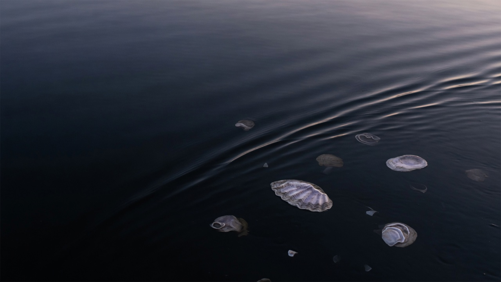

Genetic infrastructure for aquaculture
Resilience,
from the start.
A better harvest begins with better biology. We’re developing oyster genetics that address disease at its source—before the animals enter the water.
Meet the platformThe industry is scaling.
The biology needs
to catch up.
Disease turns a season of investment into an uncertain harvest.
Infrastructure, husbandry, and biosecurity matter. But the animal’s biology still shapes the outcome. OG is working to improve that foundation: more resilient lines, designed for the realities of commercial aquaculture. Better genetics can reach farms through the seed they already buy.
Switchpoint,
our platform.
Switchpoint finds candidate control points in innate immunity, tests them, and translates what holds up into improved lines. Our working hypothesis: specific regulatory bottlenecks can have an outsized effect on survival.
- 01 / DISCOVER
Resolve the biology.
Use genomic analysis and AI to prioritize candidate regulatory control points and structural variation.
- 02 / VALIDATE
Prove the effect.
Test improved genotypes under disease pressure. Measure survival, pathogen clearance, and growth together.
- 03 / TRANSLATE
Build better lines.
Carry validated findings into broodstock and hatchery production. Feed performance data back into discovery.
Advanced genetics.
Familiar workflow.
The intended product is a more resilient oyster line, delivered through triploid seed.
Growers get improved biology through hatchery partners. OG’s planned business centers on proprietary broodstock and recurring seed production, with no direct farm operation.
- 01
OG broodstock
Proprietary genetics
- 02
Hatchery partners
Production & distribution
- 03
Triploid seed
Commercial product
- 04
Oyster growers
Performance in the water
per seed
at commercial scale
Development targets; unit economics and biological performance require validation.
Discovery is a start.
Evidence is the standard.
We’re building toward reproducible survival gains that hold up without compromising growth.
Work to date
From candidates
to testable hypotheses.
- Candidate regulatory nodes identified.
- Structural hypotheses developed.
- Editing and genotyping assays designed.
OG reports preliminary internal survival signals. Independent replication and commercial performance remain to be established.
What we’re measuring
Survival under defined disease pressure, pathogen clearance, and growth relative to matched controls. The aim is a repeatable effect, with the full performance tradeoff understood.
- 2+
Independent, replicated trials
Establish that the result is reproducible.
- ≥50%
Target mortality reduction
Compared with matched controls.
- 0
Material growth penalty
Protect the performance growers depend on.
First hatchery partnerships
Create the path to commercial distribution.
Oysters are the start. Another species needs its own discovery, validation, and commercial path.
Build with OG